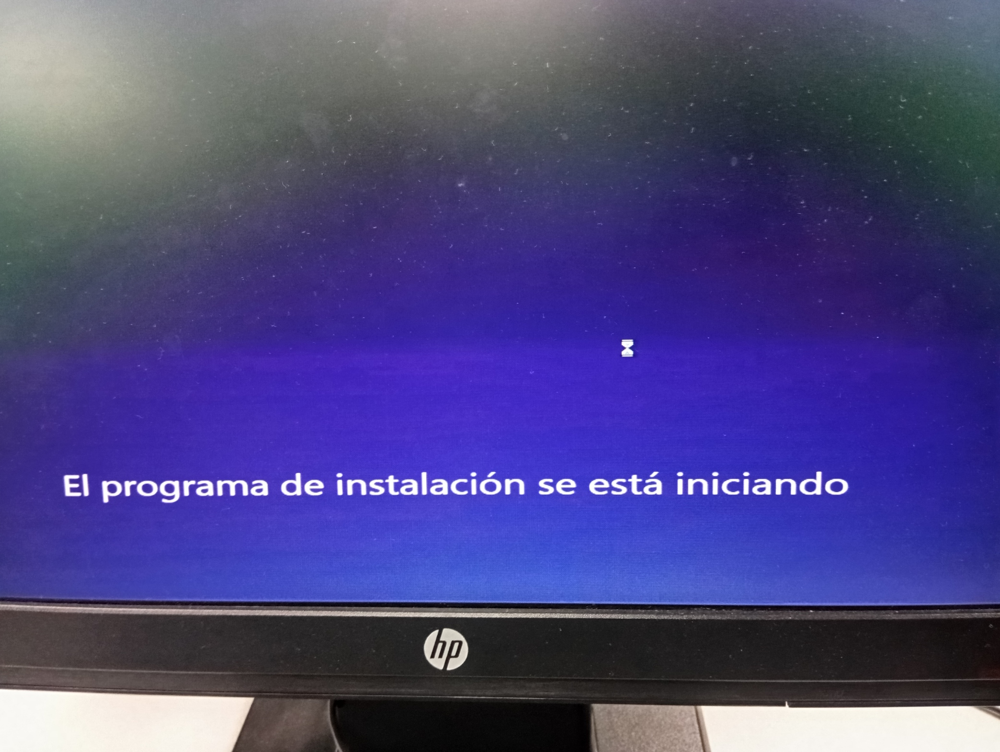
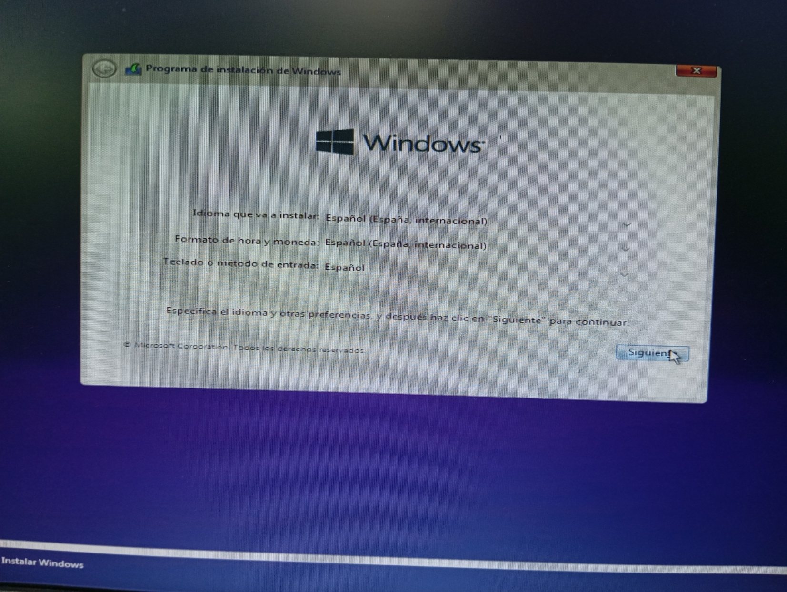
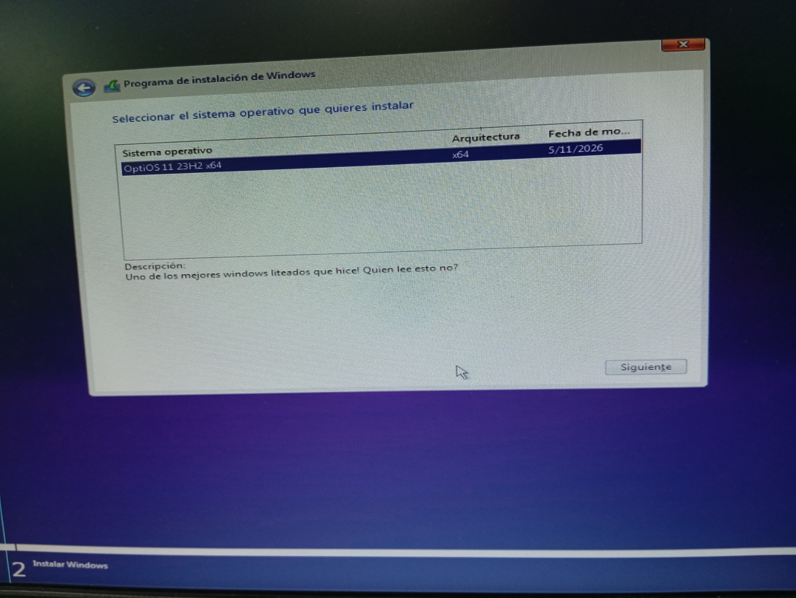
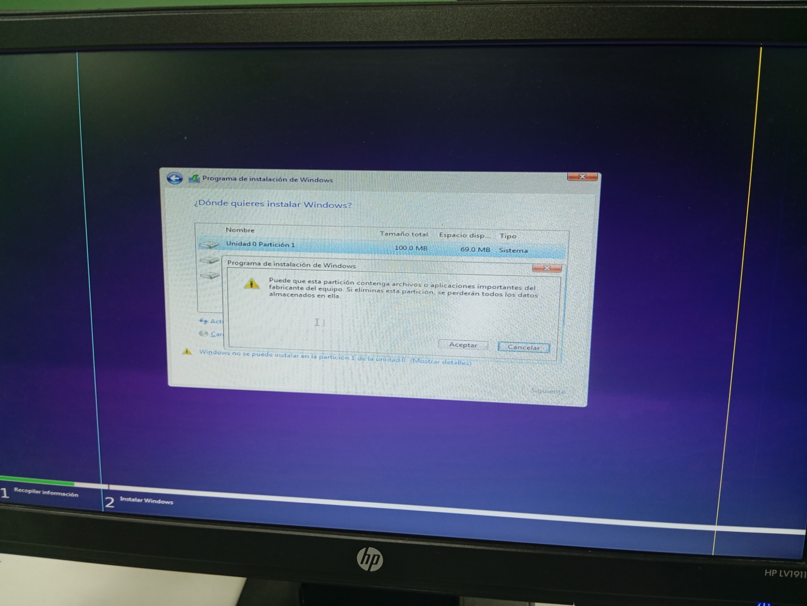
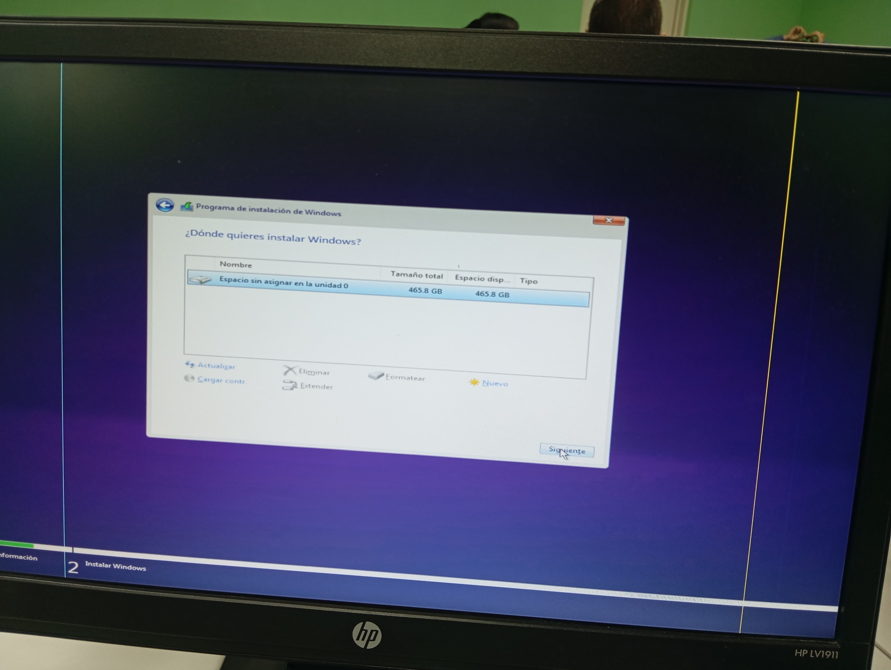
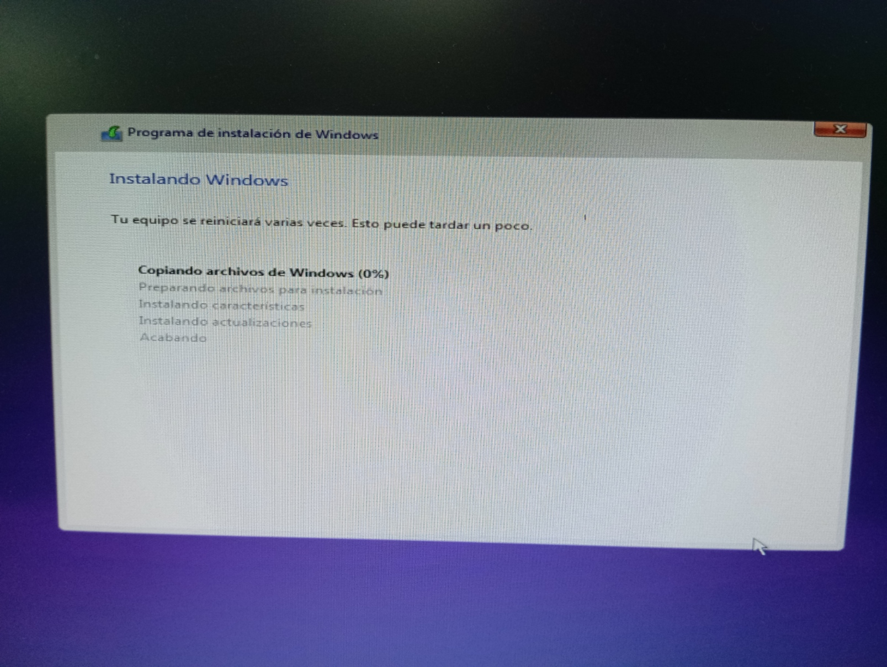
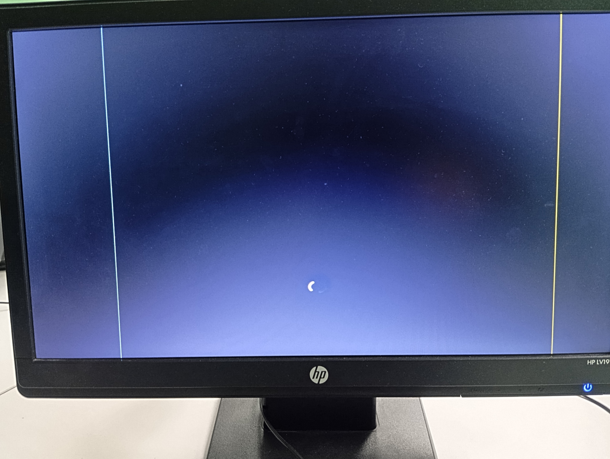
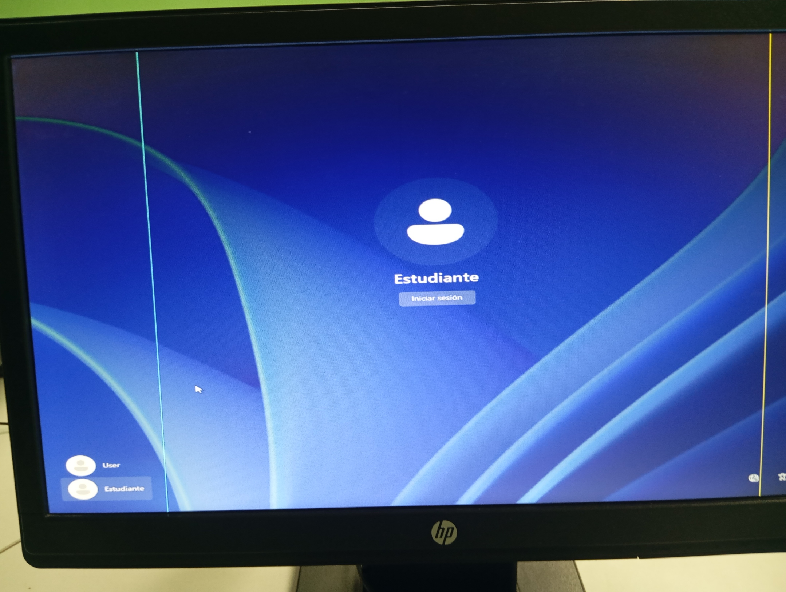
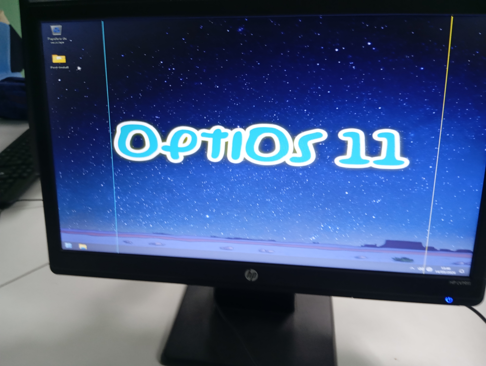

Sección 1 · Inicio
Portada
Presentación general del trabajo y propósito del manual.
Colegio Secundario de Volcán
Manual de instalación de Opti OS 11
Este material fue elaborado para explicar, de manera ordenada y comprensible, cómo instalar Opti OS 11 en un equipo de laboratorio.
Propósito del trabajo
Nuestro objetivo fue construir un manual visual y técnico que sirva de apoyo a otros estudiantes al momento de preparar un equipo, instalar el sistema operativo y comprobar que todo funcione correctamente.
¿Qué se buscó mejorar en este manual?
Claridad
Se organizaron los temas por etapas para que el lector entienda primero qué es Opti OS 11, luego qué necesita, después cómo instalarlo y finalmente cómo verificarlo.
Relación entre texto e imágenes
Las fotos incluidas no están puestas solo como decoración. Cada una corresponde a una parte real del proceso de instalación.
Utilidad práctica
Además de la explicación teórica, se añadieron recomendaciones y observaciones que normalmente se toman en cuenta cuando se trabaja con equipos de laboratorio.
Sección 2 · Navegación
Índice
Orden de las secciones que componen el manual.
Contenido del manual
- 01 Portada
- 02 Índice
- 03 ¿Qué es Opti OS 11?
- 04 Requisitos del sistema
- 05 Creación del medio con Rufus
- 06 Configuración BIOS/UEFI
- 07 Instalación paso a paso
- 08 Configuración de cuentas de usuario
- 09 Configuración posterior y verificación
Nota
Forma de lectura recomendada
Aunque el manual puede revisarse por secciones, lo más recomendable es seguirlo en orden, porque cada etapa depende de la anterior.
Sección 3 · Introducción
¿Qué es Opti OS 11?
Descripción general del sistema operativo que se instalará.
Descripción general
Opti OS 11 es una versión modificada de Windows 11 enfocada en ofrecer mejor rendimiento. Fue creada por el canal de YouTube OptiProjects y puede descargarse desde el sitio optijuegos.net.
Características principales
- Es una versión optimizada y debloated de Windows 11.
- Está orientada al gaming y a equipos con recursos limitados.
- Reduce procesos en segundo plano, telemetría y programas innecesarios.
- No exige TPM 2.0, por lo que puede instalarse en equipos donde Windows 11 original tendría restricciones.
Comparación de consumo de memoria al arrancar
| Sistema | RAM en arranque | Observación |
|---|---|---|
| Windows 11 original | ~3.5 GB | Más servicios y aplicaciones integradas |
| Opti OS 11 | ~1.2 GB | Carga inicial más ligera |
Observaciones del equipo
¿Por qué se escogió este sistema?
Se escogió porque representa un caso real de optimización de Windows y permite analizar ventajas, limitaciones y decisiones técnicas durante una instalación.
¿Qué se debe tener presente?
Aunque consume menos recursos, siempre es importante comprobar drivers, red, audio y estabilidad antes de usarlo en varios equipos.
Sección 4 · Preparación
Requisitos del sistema
Condiciones mínimas y recomendadas para instalar Opti OS 11.
Requisitos mínimos y recomendados
| Componente | Mínimo | Recomendado |
|---|---|---|
| Memoria RAM | 4 GB | 8 GB o más |
| Procesador | 64 bits | 64 bits con mejor rendimiento |
| Almacenamiento | 20 GB | SSD con 60 GB o más |
| Gráficos | DirectX 11 | GPU dedicada |
| TPM 2.0 | No requerido | No requerido |
Cómo revisar el hardware
- 1 Presionar Windows + R.
- 2 Escribir
dxdiagy pulsar Enter. - 3 Revisar la memoria RAM, el procesador y la compatibilidad gráfica.
- 4 Confirmar que el equipo cumple al menos con lo mínimo antes de instalar.
Nota
Ventaja para equipos de laboratorio
Que no exija TPM 2.0 permite aprovechar computadoras más antiguas que todavía pueden seguir usándose con buen rendimiento.
Sección 5 · Herramientas
Creación del medio con Rufus
Preparación del USB booteable para iniciar la instalación.
Material necesario
- Una memoria USB de 8 GB como mínimo.
- La ISO de Opti OS 11 descargada desde optijuegos.net.
- El programa Rufus para grabar la imagen en la memoria USB.
Pasos para crear el USB
- 1 Conectar la memoria USB al equipo.
- 2 Abrir Rufus y seleccionar el dispositivo correcto.
- 3 Buscar y cargar la ISO de Opti OS 11.
- 4 Elegir GPT si el equipo usa UEFI.
- 5 Elegir MBR si el equipo usa BIOS legacy.
- 6 Iniciar el proceso y esperar hasta que Rufus termine.
Errores comunes en esta etapa
Escoger mal el esquema de partición
Si se selecciona GPT cuando el equipo trabaja con BIOS legacy, o MBR cuando trabaja con UEFI, el arranque puede fallar.
Usar una USB con archivos importantes
La memoria se formatea durante el proceso, por lo que cualquier archivo guardado en ella se pierde.
No verificar el modo de BIOS
Antes de usar Rufus conviene abrir msinfo32 para saber exactamente si el equipo trabaja con UEFI o BIOS legacy.
Sección 6 · Firmware
Configuración BIOS/UEFI
Ingreso al firmware y cambio del orden de arranque.
Teclas de acceso según la marca
| Marca | Tecla |
|---|---|
| HP | F10 o Esc |
| Dell | F2 o F12 |
| Lenovo | F1 o F2 |
| Asus | F2 o Supr |
| Acer | F2 o Supr |
| MSI | Supr o F11 |
Cambio del orden de arranque
- 1 Reiniciar el equipo.
- 2 Entrar a BIOS o al menú de arranque con la tecla correspondiente.
- 3 Buscar la sección Boot o Arranque.
- 4 Colocar la memoria USB en el primer lugar.
- 5 Guardar los cambios con F10 y reiniciar.
Observación práctica
En un laboratorio puede haber equipos de distintas marcas. Por eso conviene tener anotadas las teclas de acceso, ya que no siempre son las mismas.
Sección 7 · Proceso principal
Instalación paso a paso
Secuencia real de instalación de Opti OS 11 con apoyo visual.
Resumen del procedimiento
- 1 Arrancar el equipo desde la memoria USB.
- 2 Esperar a que el instalador cargue correctamente.
- 3 Elegir idioma, teclado y formato regional.
- 4 Seleccionar la versión de Opti OS 11 que se va a instalar.
- 5 Preparar el disco eliminando particiones anteriores cuando sea necesario.
- 6 Crear o seleccionar el espacio donde se instalará el sistema.
- 7 Esperar la copia e instalación de archivos hasta el primer reinicio.
Secuencia visual real de la instalación







Decisiones tomadas durante la práctica
Idioma y teclado
Se trabajó en español y con teclado latinoamericano para que la configuración quedara adecuada al entorno donde se usará el equipo.
Manejo de particiones
Se decidió limpiar el disco para realizar una instalación desde cero, ya que se trataba de un equipo de laboratorio sin necesidad de conservar archivos personales.
Tiempo estimado
El proceso completo puede durar entre 20 y 40 minutos, dependiendo del disco y del rendimiento general del equipo.
Advertencia
Precaución durante esta etapa
No se debe apagar el equipo ni retirar la memoria USB antes de tiempo. Si se interrumpe el proceso, la instalación puede quedar incompleta.
Sección 8 · Accesos
Configuración de cuentas de usuario
Organización de usuarios para el entorno del laboratorio.
Criterio usado en el laboratorio
Como se trata de equipos de laboratorio MEDUCA y no de computadoras personales, la configuración de usuarios debe enfocarse en mantener el control del sistema y evitar modificaciones accidentales.
Cuentas recomendadas
| Cuenta | Tipo | Función | Permisos |
|---|---|---|---|
| Soporte | Administrador | Uso por técnico o docente | Permisos completos y protegida con contraseña |
| Estudiante | Usuario estándar | Uso diario por el alumnado | Sin permisos de instalación ni cambios críticos |
Pantalla de inicio de sesión

Nota
Buena práctica
Separar el usuario administrador del usuario de estudiante protege mejor el sistema y facilita el mantenimiento del laboratorio.
Sección 9 · Cierre
Configuración posterior y verificación
Comprobaciones finales después de terminar la instalación.
Revisión final del sistema
- 1 Comprobar que el sistema inicia sin errores.
- 2 Verificar audio, red y resolución de pantalla.
- 3 Abrir el Administrador de dispositivos y confirmar que no existan íconos de advertencia.
- 4 Probar que las cuentas Soporte y Estudiante funcionen correctamente.
Resultado final del proceso

Verificaciones que no se deben omitir
Audio y red
Son dos de los elementos más importantes en un laboratorio. Si alguno falla, el equipo no queda listo para clases o actividades multimedia.
Administrador de dispositivos
Sirve para detectar si hay controladores faltantes o si algún componente del hardware no fue reconocido correctamente.
Prueba de usuarios
No basta con crear las cuentas. Hay que entrar a ellas para confirmar que realmente funcionan y tienen los permisos previstos.